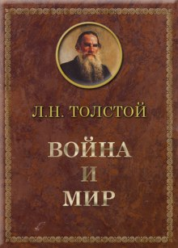
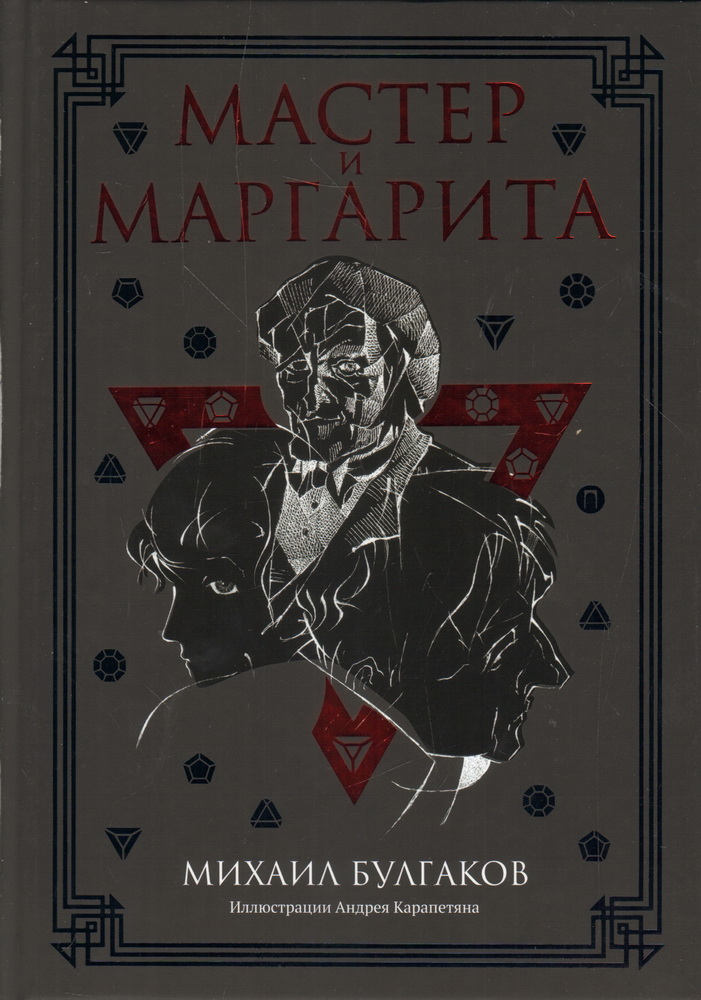
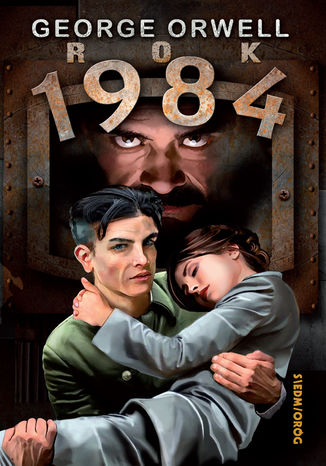
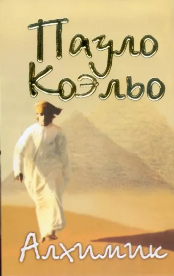
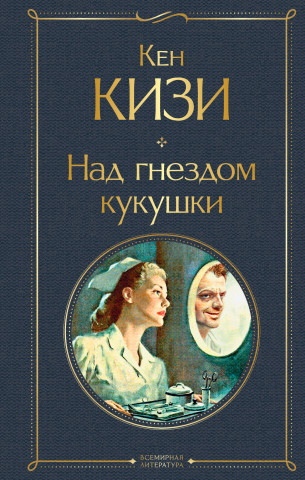

Популярное за последний месяц
|  |
Война́ и мир (рус. дореф. «Война и миръ») — роман-эпопея Льва Николаевича Толстого, описывающий русское общество в эпоху войн против Наполеона в 1805—1812 годах. Эпилог романа доводит повествование до 1820 года. |
|  |
роман Михаила Афанасьевича Булгакова, работа над которым началась в декабре 1928 года и продолжалась вплоть до смерти писателя в марте 1940 года. Роман относится к незавершённым произведениям; редактирование и сведение воедино черновых записей осуществляла после смерти мужа вдова писателя — Елена Сергеевна. Первая версия романа, имевшая названия «Копыто инженера», «Чёрный маг» и другие, была уничтожена Булгаковым в 1930 году. В последующих редакциях среди героев произведения появились автор романа о Понтии Пилате и его возлюбленная. Окончательное название — «Мастер и Маргарита» — оформилось в 1937 году. |
|  |
роман-антиутопия Джорджа Оруэлла, изданный в 1949 году. Как отмечает членкор РАН М. Ф. Черныш, это самое главное и последнее произведение писателя |
|  |
Алхимик" - самый известный роман бразильского писателя Пауло Коэльо, любимая книга миллионов людей во всем мире. В юности люди не боятся мечтать, все кажется им возможным. Но проходит время, и таинственная сила принимается им внушать, что их желания неосуществимы. |
|  |
Культовый роман, который входит в сотню самых читаемых по версии "Таймс". Вышел в шестидесятых, в яркое время протеста нового поколения против алчности, обезличивания, войн и насилия. Либерализм против традиционализма, личность против устоев. Роман потрясает глубиной, волнует, заставляет задуматься о жизни, о справедливости, о системе и ее непогрешимости, о границах безумия и нормальности, о свободе, о воле, о выборе. Читать обязательно. |